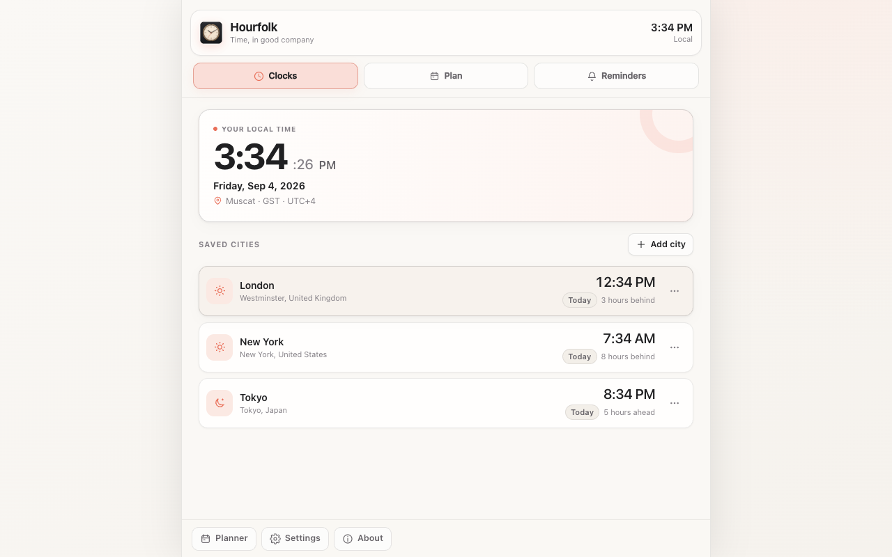

Your plans stay with you.
Saved cities, reminders, and preferences live in Chrome’s local extension storage.
A little extension. A closer world.
Your team in London. Your client in New York. Your family in Tokyo. Bring their time into your day, with one thoughtful Chrome extension.
Free to useNo account neededMade for Chrome

Make room for
the people who matter.
From “when?” to “see you then.”
Three simple tools for a day that stretches across the world.
Your local time, your saved cities, and the difference between them.
For work. For life. For your people.
Some days, it’s a project handoff. Others, a call home. Knowing someone’s time is a small way to be more thoughtful with it.
Keep colleagues’ cities close, so you can check their time before you reach out.
Turn their proposed time into yours, then set a reminder for the conversation.
Keep family and friends a glance away, even when they’re an ocean away.
Saved cities, reminders, and preferences live in Chrome’s local extension storage.
Hourfolk works without a sign-up or a backend service. Your extension data isn’t sent to us.
A small introduction
Yes. Hourfolk is free to use, with no account or payment required.
Hourfolk is a Chrome extension. Open it from the toolbar, keep it in Chrome’s side panel, or use the full-page dashboard.
Yes. Pick any combination of 30, 15, 10, and 5 minutes before your event. The reminder at the scheduled time stays included.
Yes. Reminders use Chrome’s notifications, so Chrome must be running. If your device is asleep, an alert can arrive after it wakes. Delivery and sound also depend on your device’s notification settings.
Yes. Choose light, dark, or system appearance in Hourfolk’s settings. Your preference is saved alongside the rest of your workspace.
Time, in good company.
Make a little space in your browser for the people in your world.
Free to use. No account needed. Made for Chrome.